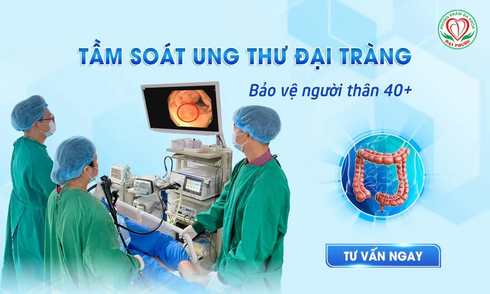

Nội Soi Đại Tràng: Tầm Soát Ung Thư Ruột Cho Người Trên 40 Tuổi
Ung thư đại tràng đang trở thành mối lo ngại sức khỏe hàng đầu tại Việt Nam với xu hướng gia tăng đáng báo động. Theo thống kê của Globocan 2022, Việt Nam ghi nhận 16.835 ca mắc mới ung thư đại tràng, đứng thứ 4 trong các bệnh ung thư phổ biến. Đặc biệt, người trên 40 tuổi chiếm đến 95,7% tổng số ca mắc, khiến việc tầm soát sớm bằng nội soi đại tràng trở nên cấp thiết hơn bao giờ hết.
Tại Sao Tuổi 40 Là Mốc Quan Trọng?
Nguy Cơ Gia Tăng Theo Tuổi
Tuổi tác là yếu tố nguy cơ quan trọng nhất của ung thư đại tràng. Nghiên cứu cho thấy nguy cơ mắc bệnh này tăng gấp đôi sau mỗi 10 năm kể từ tuổi 40. Điều này được giải thích bởi quá trình lão hóa tế bào, tích lũy các tổn thương DNA và suy giảm khả năng phục hồi của cơ thể.
Ở độ tuổi 40, niêm mạc đại tràng bắt đầu có những thay đổi nhất định. Các polyp - tổn thương tiền ung thư - có xu hướng xuất hiện và phát triển nhiều hơn. Nếu không được phát hiện và loại bỏ kịp thời, những polyp này có thể chuyển biến thành ung thư sau một thời gian.
Thay Đổi Lối Sống Hiện Đại
Người trên 40 tuổi thường có lối sống và chế độ ăn uống đã định hình trong nhiều năm. Các yếu tố nguy cơ như chế độ ăn nhiều thịt đỏ, thức ăn chế biến sẵn, ít rau xanh, thiếu vận động, căng thẳng công việc và thói quen hút thuốc, uống rượu bia đã tích lũy tác động tiêu cực lên đại tràng.
Đặc biệt, thói quen ăn uống của người Việt hiện đại với nhiều thức ăn nướng, chiên rán, thức ăn nhanh và đồ uống có ga đã làm tăng nguy cơ viêm mãn tính và tổn thương niêm mạc đại tràng.
Tình Hình Ung Thư Đại Tràng Tại Việt Nam
Số Liệu Báo Động
Theo báo cáo mới nhất từ các cơ quan y tế, ung thư đại tràng hiện đứng thứ 5 về tỷ lệ ung thư phổ biến tại Việt Nam, chỉ sau ung thư gan, phổi, vú và dạ dày. Đáng lo ngại hơn, bệnh đang có xu hướng trẻ hóa với nhiều ca mắc ở độ tuổi 30-40.
Tỷ lệ mắc bệnh giữa nam và nữ gần như tương đương (nam 53%, nữ 47%), cho thấy đây không phải là bệnh lý của riêng giới nào. Điều này khẳng định tầm quan trọng của việc tầm soát định kỳ cho tất cả mọi người khi đến tuổi nguy cơ.
Tỷ Lệ Phát Hiện Muộn Cao
Một thực tế đáng buồn là phần lớn các ca ung thư đại tràng tại Việt Nam được phát hiện ở giai đoạn muộn. Nguyên nhân chính là do bệnh thường không có triệu chứng rõ ràng ở giai đoạn sớm và ý thức tầm soát của người dân còn hạn chế.
Khi xuất hiện triệu chứng như đau bụng, táo bón, đi ngoài ra máu, sụt cân, bệnh thường đã ở giai đoạn tiến triển, làm giảm đáng kể hiệu quả điều trị và tiên lượng.
Lợi Ích Của Nội Soi Đại Tràng Tầm Soát
Phát Hiện Sớm Tổn Thương Tiền Ung Thư
Nội soi đại tràng là phương pháp duy nhất cho phép quan sát trực tiếp toàn bộ niêm mạc đại tràng với độ chính xác cao. Bác sĩ có thể phát hiện những polyp nhỏ nhất, những vùng niêm mạc bất thường mà các phương pháp khác không thể phát hiện được.
Đặc biệt quan trọng, nội soi không chỉ phát hiện mà còn có thể loại bỏ polyp ngay trong quá trình thực hiện. Việc cắt bỏ polyp có ý nghĩa phòng ngừa ung thư tuyệt đối, ngăn chặn quá trình chuyển biến từ lành tính sang ác tính.
Chẩn Đoán Chính Xác Các Bệnh Lý Khác
Ngoài tầm soát ung thư, nội soi đại tràng còn giúp chẩn đoán nhiều bệnh lý khác như viêm loét đại tràng, bệnh Crohn, hội chứng ruột kích thích. Những bệnh lý này nếu không được điều trị kịp thời cũng có thể tăng nguy cơ ung thư về lâu dài.
Khả năng lấy mẫu sinh thiết trong quá trình nội soi giúp xác định chính xác tính chất của tổn thương, từ đó đưa ra phương án điều trị phù hợp và hiệu quả nhất.
Đánh Giá Toàn Diện Sức Khỏe Đường Tiêu Hóa
Nội soi đại tràng cung cấp cái nhìn tổng thể về tình trạng sức khỏe đường tiêu hóa dưới. Bác sĩ có thể đánh giá mức độ viêm, tình trạng niêm mạc, sự hiện diện của các tổn thương từ nhỏ đến lớn.
Thông tin này rất có giá trị trong việc tư vấn chế độ ăn uống, lối sống và xây dựng kế hoạch theo dõi sức khỏe lâu dài cho bệnh nhân.
Ai Nên Tầm Soát Nội Soi Đại Tràng?
Người Trên 40 Tuổi Không Có Triệu Chứng
Theo khuyến cáo của các hiệp hội ung thư quốc tế, mọi người từ 40 tuổi trở lên nên thực hiện nội soi đại tràng tầm soát định kỳ, ngay cả khi không có triệu chứng. Đây là độ tuổi mà nguy cơ ung thư bắt đầu tăng đáng kể.
Đối với những người có yếu tố nguy cơ thấp, việc tầm soát có thể thực hiện 5-10 năm một lần. Tuy nhiên, khoảng cách này cần được bác sĩ tư vấn cụ thể dựa trên tình trạng sức khỏe và các yếu tố nguy cơ cá nhân.
Người Có Yếu Tố Nguy Cơ Cao
Những người có tiền sử gia đình mắc ung thư đại tràng cần bắt đầu tầm soát sớm hơn, thường là từ 35-40 tuổi hoặc sớm hơn 10 năm so với tuổi người thân mắc bệnh. Tần suất tầm soát cũng cần dày hơn, thường 3-5 năm một lần.
Người từng có polyp đại tràng, bệnh viêm ruột mãn tính, hoặc có triệu chứng nghi ngờ như đi ngoài ra máu, thay đổi thói quen đại tiện, đau bụng kéo dài cũng cần thực hiện nội soi ngay lập tức.
Người Có Lối Sống Nguy Cơ Cao
Những người có chế độ ăn nhiều thịt đỏ, ít rau xanh, hút thuốc lá, uống rượu bia thường xuyên, béo phì, ít vận động cần quan tâm đến việc tầm soát sớm. Các yếu tố này làm tăng đáng kể nguy cơ phát triển ung thư đại tràng.
Quy Trình Nội Soi Đại Tràng Tại Đại Phước
Chuẩn Bị Trước Nội Soi
Việc chuẩn bị đúng cách là yếu tố quyết định thành công của nội soi. Bệnh nhân cần tuân thủ chế độ ăn uống trước nội soi, sử dụng thuốc sổ để làm sạch ruột.
Đội ngũ y tá tại Đại Phước sẽ hướng dẫn chi tiết và theo dõi sát sao quá trình chuẩn bị, đảm bảo bệnh nhân thực hiện đúng để có kết quả nội soi chính xác nhất.
Thực Hiện Nội Soi Không Đau
Tại Đại Phước, nội soi đại tràng được thực hiện với kỹ thuật tiền mê nhẹ, giúp bệnh nhân hoàn toàn thoải mái. Thời gian thực hiện thường từ 15-30 phút tùy thuộc vào tình trạng cụ thể của từng người.
Máy nội soi OLYMPUS hiện đại với công nghệ NBI cho phép quan sát chi tiết từng vùng niêm mạc, phát hiện những tổn thương nhỏ nhất. Nếu phát hiện polyp, bác sĩ có thể cắt bỏ ngay trong quá trình nội soi.
Chăm Sóc Sau Nội Soi
Sau khi hoàn thành nội soi, bệnh nhân được theo dõi cho đến khi tỉnh táo hoàn toàn. Bác sĩ sẽ giải thích kết quả chi tiết, tư vấn về tình trạng sức khỏe và lên kế hoạch theo dõi tiếp theo nếu cần thiết.
Đội ngũ y tế sẽ hướng dẫn chế độ ăn uống và sinh hoạt sau nội soi, đảm bảo bệnh nhân hồi phục nhanh chóng và an toàn.
Xem thêm: Những điều cần biết trước khi nội soi đại tràng
Lợi Ích Kinh Tế Của Tầm Soát Sớm
Tiết Kiệm Chi Phí Điều Trị
Chi phí tầm soát nội soi đại tràng tuy có vẻ cao ở thời điểm hiện tại, nhưng lại tiết kiệm rất nhiều chi phí về lâu dài. Việc phát hiện và loại bỏ polyp sớm có thể ngăn ngừa hoàn toàn ung thư, tránh được những chi phí điều trị khổng lồ sau này.
Theo thống kê, chi phí điều trị ung thư đại tràng giai đoạn muộn có thể lên đến hàng tỷ đồng, trong khi chi phí tầm soát chỉ bằng một phần nhỏ của con số này.
Giảm Gánh Nặng Tâm Lý
Việc biết chắc mình không mắc ung thư mang lại sự an tâm rất lớn, giúp cải thiện chất lượng cuộc sống. Ngược lại, phát hiện sớm ung thư cũng mang lại hy vọng điều trị thành công cao, giảm căng thẳng và lo lắng cho bệnh nhân và gia đình.
Cam Kết Chất Lượng Tại Đại Phước
Đội Ngũ Bác Sĩ Chuyên Nghiệp
Phòng khám Đại Phước tự hào có đội ngũ bác sĩ chuyên khoa tiêu hóa giàu kinh nghiệm, từng công tác tại các bệnh viện hàng đầu. Các bác sĩ được đào tạo bài bản về kỹ thuật nội soi hiện đại và thường xuyên cập nhật kiến thức mới nhất.
Xem thêm: Đội ngũ bác sĩ tại Phòng Khám Đa Khoa Đại Phước
Trang Thiết Bị Hiện Đại
Hệ thống máy nội soi OLYMPUS với công nghệ tiên tiến nhất hiện nay, đảm bảo hình ảnh sắc nét và khả năng phát hiện tổn thương cao. Quy trình khử khuẩn nghiêm ngặt theo chuẩn quốc tế đảm bảo an toàn tuyệt đối.
Dịch Vụ Toàn Diện
Từ tư vấn trước nội soi, thực hiện thủ thuật đến chăm sóc sau nội soi, bệnh nhân được hỗ trợ tận tình trong suốt quá trình. Phòng khám còn hỗ trợ thanh toán bảo hiểm y tế, giúp giảm gánh nặng chi phí cho bệnh nhân.
Xem thêm: Dịch vụ tại phòng khám đại phước
Kết luận: Nội soi đại tràng tầm soát ung thư là khoản đầu tư quan trọng nhất cho sức khỏe của người trên 40 tuổi. Với xu hướng gia tăng của ung thư đại tràng tại Việt Nam, việc tầm soát sớm không chỉ giúp phát hiện và điều trị kịp thời mà còn có thể ngăn ngừa hoàn toàn bệnh ung thư. Hãy chủ động bảo vệ sức khỏe bằng cách thực hiện nội soi đại tràng định kỳ tại những cơ sở y tế uy tín như phòng khám Đại Phước.
Đặt lịch khám tại Phòng khám Đa khoa Đại Phước
-
Website: phongkhamdaiphuoc.vn
-
Hotline: 1900 599 941 - 0938 829 831
-
Địa chỉ: 829-831 Đường 3/2, Phường Minh Phụng, TP.HCM
-
Giờ làm việc: 6h00 - 20h00 (T2-T7), 6h00 - 11h30 (CN)

Các tin khác


ĐĂNG KÝ NHẬN BẢN TIN

Phòng Khám Đa Khoa Đại Phước
- 829 đường 3 tháng 2, Phường Minh Phụng, Thành phố Hồ Chí Minh
- 1900 599 941 - 0938 829 831
- (028) 3955 7999
- info@ytedaiphuoc.vn
-

6:00 - 11:30 (Chủ Nhật)


GPKD số : 0312023683 cấp ngày: 29/10/2012 Bởi Sở Kế Hoạch và Đầu Tư TP.Hồ Chí Minh
Đại diện: Tống Nguyễn Diễm Hồng